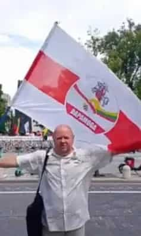
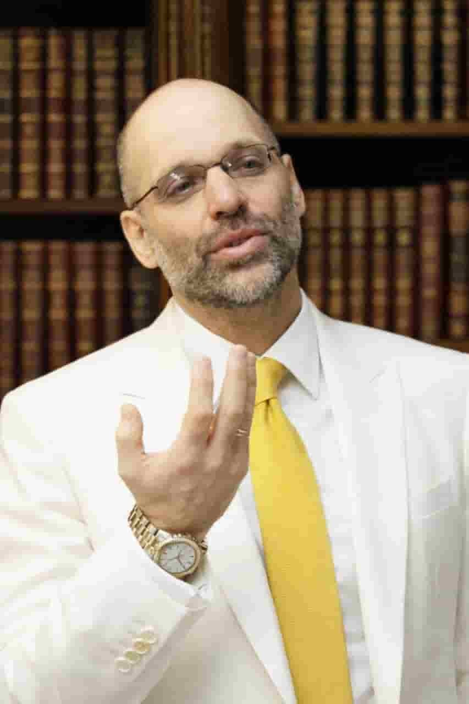
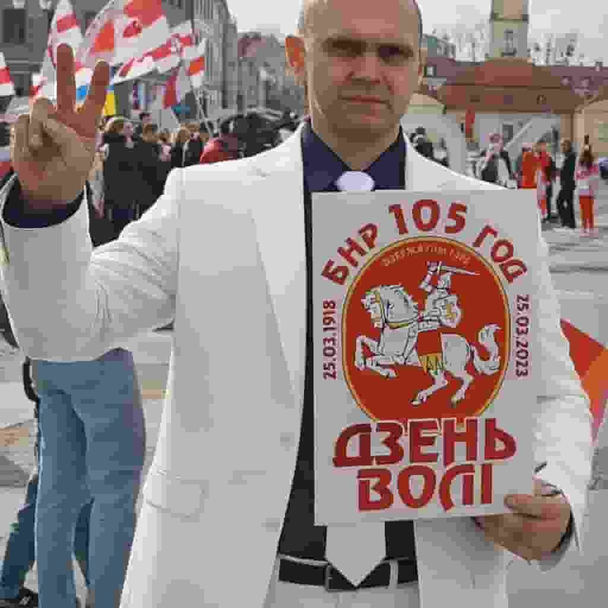
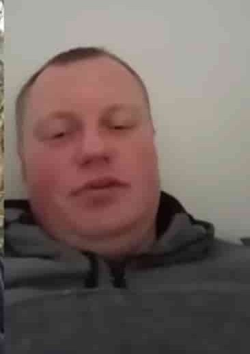
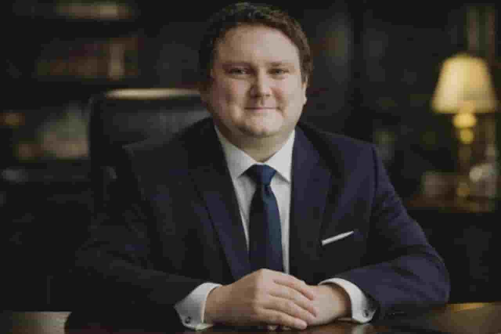

Члены комиссии, их биографии и контактная информация

Глава Центральной избирательной комиссии. Политический активист, организатор демократических инициатив. Координирует работу комиссии по подготовке к свободным выборам в Беларуси.
Общественный активист и блогер. Участвует в координации работы комиссии, связях с общественностью и информационной политике.

Консультант по вопросам групповой динамики, организационного развития и стратегии политической борьбы. Автор концепции «Сети событий» для активистов.

Политический активист из города Лида (Гродненская область). Работал автоэлектриком. Активный участник протестов против фальсификации выборов 2020 года.
Признан политзаключённым правозащитными организациями («Вясна», Dissidentby). Находится в эмиграции.
Советник по белорусским вопросам при Legionie Polskim (Польский Легион).
Координация взаимодействия с польскими структурами, работа с белорусской диаспорой в Польше, консультации по вопросам легализации и защиты прав белорусских граждан.

Бывший политзаключённый. Преследовался белорусскими властями за политическую активность и поддержку демократических изменений.
Юридическое сопровождение деятельности ЦИК, консультации по правовым вопросам, защита прав членов комиссии и избирателей.

Общественный активист, помощник политзаключённым. Известен своей активной гражданской позицией и участием в правозащитной деятельности.
В 2020 году активно помогал политзаключённым: носил еду и одежду, координировал помощь семьям репрессированных. Участвовал в акциях солидарности.
Секретарь ЦИК — организация документооборота, координация встреч и коммуникация между членами комиссии, ведение протоколов.